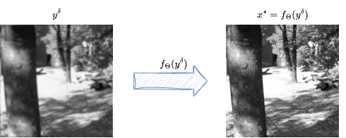
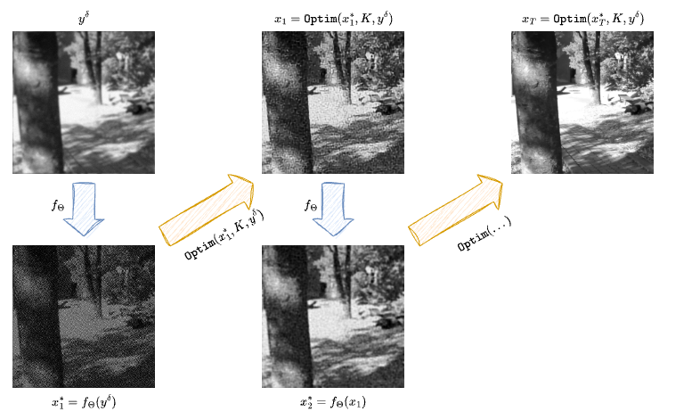
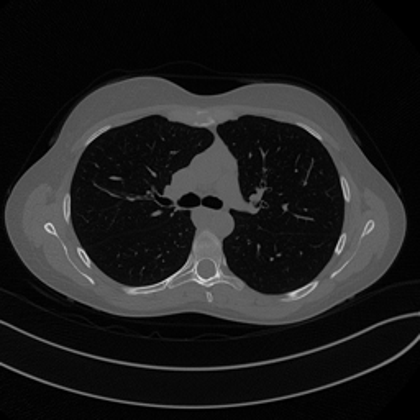

Processing Images for Neural Networks#
From Inverse Problems to Neural Imaging Pipelines#
Before introducing PyTorch itself, it is useful to make one intermediate step explicit. In the first module of the course, image reconstruction was formulated as the inverse problem
where \(K \in \mathbb{R}^{m \times n}\) is the discrete acquisition operator, \(\boldsymbol{x}^\dagger \in \mathbb{R}^n\) is the unknown image, and \(\boldsymbol{e} \in \mathbb{R}^m\) models noise and perturbation. Classical reconstruction methods then compute an approximation of \(\boldsymbol{x}^\dagger\) by solving a variational problem of the form
When neural networks enter the picture, this mathematical structure is not discarded. Rather, it is re-expressed in a form that is compatible with tensor computation, stochastic optimization, and large datasets. The purpose of the present chapter is therefore to explain how an imaging problem moves from the language of vectors and operators to the language of batches, channels, datasets, and data loaders.
Note
A useful teaching point is that data preparation is not a secondary implementation step. The way one stores images, normalizes intensities, and batches samples already encodes assumptions on the reconstruction problem and on the class of admissible solutions.
End-to-end and hybrid strategies.
A first conceptual distinction concerns the role played by the network inside the reconstruction method.
In an end-to-end reconstruction strategy, one trains a model \(f_{\boldsymbol{\Theta}}\) that maps the measured datum directly to a reconstructed image,
This approach is attractive because inference is fast once training is completed: a single forward pass can replace a long iterative algorithm. The difficulty is that the network is asked to absorb, within one learned map, both the geometry of the acquisition process and the prior structure of the image class.
{kind=link}

In a hybrid method, by contrast, one retains an explicit reconstruction step based on the physics or on a classical solver, and uses the neural network only as one part of the full method. The network may act as a learned regularizer, a denoiser, a post-processing operator, or a module inside an iterative scheme. This is computationally more expensive, but it often gives stronger control over data consistency and over the relation between the reconstruction and the measurement model.
{kind=link}

Representing and Preparing Images for Neural Networks#
Classical inverse-problem notation often treats images as vectors in \(\mathbb{R}^n\). This is mathematically convenient, but it hides the spatial structure of the data. Neural networks, and especially convolutional models, are designed precisely to exploit this structure. For this reason, images are not usually flattened before entering the model.
Instead, a grayscale image is represented as a tensor of shape
with \(C=1\), while a minibatch of \(B\) grayscale images is represented as
For RGB images one has \(C=3\). For multispectral or physically richer measurements, the channel dimension may carry additional information. The crucial point is that the tensor representation preserves the two-dimensional geometry of the image.
This has an immediate consequence for the operator notation. If one works with batches, the forward operator must be understood as acting on structured tensors rather than on isolated vectors. In practice, one should think of a map of the form
This is one reason why it is often misleading to think of the computational operator as a literal dense matrix. In realistic imaging problems, \(K\) is implemented as an algorithmic operator, and when needed its transpose or adjoint is represented computationally through a companion map \(K^T\).
Warning
In neural imaging pipelines, shape conventions are part of the mathematical model. A tensor of shape \((H,W)\) and a tensor of shape \((1,1,H,W)\) may represent the same image visually, but they do not play the same role inside a network.
import sys
from pathlib import Path
ROOT = next(p for p in (Path.cwd(), *Path.cwd().parents) if (p / "course_utils.py").exists())
if str(ROOT) not in sys.path:
sys.path.insert(0, str(ROOT))
from course_utils import gray, rgb, show
import numpy as np
import torch
img = gray("Mayo.png", size=256)
array_uint8 = np.asarray(img, dtype=np.uint8)
array_float = np.asarray(img, dtype=np.float32) / 255.0
single_image = torch.tensor(array_float).unsqueeze(0)
batched_image = single_image.unsqueeze(0)
stacked_batch = torch.stack([single_image, single_image.flip(-1), single_image.flip(-2)], dim=0)
print('Original dtype:', array_uint8.dtype)
print('Normalized range:', float(array_float.min()), float(array_float.max()))
print('Single image tensor shape (C,H,W):', tuple(single_image.shape))
print('Batched tensor shape (B,C,H,W):', tuple(batched_image.shape))
print('Mini-batch of three images:', tuple(stacked_batch.shape))
show(img, width=420)
Original dtype: uint8
Normalized range: 0.0 0.8627451062202454
Single image tensor shape (C,H,W): (1, 256, 256)
Batched tensor shape (B,C,H,W): (1, 1, 256, 256)
Mini-batch of three images: (3, 1, 256, 256)

Normalization and data type.
Two preprocessing choices are especially important.
The first is normalization. Images stored as uint8 typically take values in \(\{0,\ldots,255\}\). Neural networks are rarely trained directly on this scale. Instead, one usually rescales the data, for example into \([0,1]\), so that activations and gradients remain in numerically stable ranges. This is not merely cosmetic. The scale of the input changes the scale of the loss, and therefore changes the optimization dynamics.
The second is the data type. In most imaging applications, float32 is the standard compromise between memory usage and numerical precision. Lower precision can be faster, but may be too crude for delicate inverse problems. Higher precision can be useful for debugging, operator verification, or especially unstable pipelines, but it increases memory cost significantly.
A third practical point concerns dataset organization. Classical deterministic reconstruction methods may process one image at a time. Neural training, by contrast, relies on many samples, often shuffled and batched. The dataset is therefore not an accessory to the model. It is part of the computational definition of the learning problem.
Datasets, DataLoaders, and a Mayo-Style Example#
Once images are stored in a tensor-compatible format, one still needs a mechanism to serve them efficiently during training. In PyTorch, this is the role of the Dataset and DataLoader abstractions.
A dataset defines how a single sample is retrieved. It may read an image from disk, normalize it, apply a crop, convert it to a tensor, and return either the clean image, the corrupted measurement, or both. A data loader then wraps the dataset and produces shuffled minibatches.
For a course on computational imaging, this distinction is pedagogically important. The dataset is where the acquisition model, the train-test split, and the preprocessing pipeline are encoded. The data loader is where these samples are organized into the batches seen by stochastic optimization.
In the previous academic year, this discussion was illustrated through the Mayo dataset, a standard benchmark for CT reconstruction. In the present notes we keep the same conceptual point, but use a lightweight local example so that the notebook remains runnable even without access to the full external dataset.
Note
When a real imaging dataset is unavailable locally, one can still teach the pipeline structure by extracting patches or augmented views from a single representative image. This does not replace a proper benchmark, but it is enough to explain the mechanics of loading, batching, and preprocessing.
import numpy as np
import torch
from torch.utils.data import DataLoader, Dataset
class MayoStylePatchDataset(Dataset):
def __init__(self, patch_size=64, stride=64):
img = gray("Mayo.png", size=256)
array = np.asarray(img, dtype=np.float32) / 255.0
x = torch.tensor(array).unsqueeze(0) # (C, H, W)
patches = []
for i in range(0, 256 - patch_size + 1, stride):
for j in range(0, 256 - patch_size + 1, stride):
patch = x[:, i:i+patch_size, j:j+patch_size]
patches.append(patch)
self.patches = patches
def __len__(self):
return len(self.patches)
def __getitem__(self, idx):
return self.patches[idx]
dataset = MayoStylePatchDataset(patch_size=64, stride=64)
loader = DataLoader(dataset, batch_size=4, shuffle=True)
batch = next(iter(loader))
print('Number of patches in the dataset:', len(dataset))
print('Batch tensor shape:', tuple(batch.shape))
print('Batch dtype:', batch.dtype)
print('Batch intensity range:', float(batch.min()), float(batch.max()))
Number of patches in the dataset: 16
Batch tensor shape: (4, 1, 64, 64)
Batch dtype: torch.float32
Batch intensity range: 0.0 0.8627451062202454
Why This Section Comes Before PyTorch Proper#
At this point the student should have a clear picture of what a neural imaging pipeline receives as input before any learned architecture is even defined.
The progression is now the following:
start from an inverse problem written in operator form;
decide whether the network acts in an end-to-end or hybrid fashion;
represent images as tensors with explicit batch and channel dimensions;
normalize the data and choose a suitable numeric type;
build datasets and data loaders that expose the reconstruction problem to the optimizer.
Only after these ingredients are in place does it make sense to discuss modules, gradients, automatic differentiation, and optimizers in PyTorch itself. This is the purpose of the next notebook.
Exercises#
Explain why representing an image as a tensor of shape \((B,C,H,W)\) is more natural for neural networks than flattening it immediately into a vector.
In the measurement model \(\boldsymbol{y}^\delta = K\boldsymbol{x}^\dagger + \boldsymbol{e}\), discuss which parts of the problem may already be affected by preprocessing choices such as normalization or cropping.
Compare end-to-end reconstruction and hybrid reconstruction from the viewpoint of speed, interpretability, and control of data consistency.
Suppose a dataset contains grayscale images saved as
uint8. Describe a mathematically sensible preprocessing pipeline before these images are used for training.Modify the patch dataset example so that each sample returns both a clean patch and a blurred patch produced by a simple fixed kernel.
Further Reading#
The role of data handling in deep learning systems is discussed from a software and systems viewpoint in [12]. For the imaging perspective, the most important follow-up is not a general machine learning text, but the later notebooks of this module, where the same dataset and tensor conventions reappear inside CNN, UNet, self-supervised, and generative reconstruction pipelines.